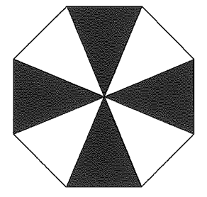

DSE 2013 · 卷二 · Q15
反射對稱
題目
圖中，正八邊形被分成八個全等的等腰三角形，其中四個塗上陰影。
該圖形（八邊形連同陰影）的反射對稱軸數目是
A
$2$
B
$4$
C
$6$
D
$8$

圖（原卷附圖）
題解
圖：反射對稱解題示意圖（題解繪）
第 1 步
先數八邊形本身的對稱軸
正多邊形的對稱軸
\(\text{a regular }n\text{-gon has }n\text{ axes of symmetry}\)
正八邊形有 $8$ 條對稱軸，可分兩類，各 $4$ 條。
把圓心 $O$ 與八個頂點相連，八個等腰三角形的頂角為 \[ \frac{360^{\circ}}{8}=45^{\circ}. \] 正八邊形共有 $8$ 條對稱軸：$4$ 條穿過相對頂點（即沿半徑），$4$ 條穿過相對邊的中點。
不過題目問的是「連同陰影」的圖形，陰影可能令部分對稱軸失效，要逐類檢查。
第 2 步
穿過對邊中點的 $4$ 條軸：陰影保留
反射保持陰影
\(\text{reflection is a symmetry}\ \Leftrightarrow\ \text{shaded}\mapsto\text{shaded}\)
對稱軸必須把陰影部分映到陰影部分，否則就不是整個圖形的對稱。
圖中陰影三角形位於上、右、下、左四個位置，其餘四個（斜向）留白。
以鉛垂軸為例：上、下的陰影三角形各自對應到自己；
右邊的陰影三角形映到左邊的陰影三角形。
四條穿過相對邊中點的軸都同樣把「上 $\leftrightarrow$ 右 $\leftrightarrow$ 下 $\leftrightarrow$ 左」的陰影互換，
陰影映陰影、留白映留白，所以這 $4$ 條軸全部成立。
第 3 步
穿過相對頂點的 $4$ 條軸：陰影被映到留白
對稱軸的分類
\(\dfrac{n}{2}+\dfrac{n}{2}=n\)
另一類 $4$ 條軸沿半徑方向，會把一個陰影三角形送到相鄰的留白三角形。
穿過相對頂點的軸沿著半徑，正好落在兩個相鄰三角形的分界上。
反射後，上方的陰影三角形會被送到斜向的留白三角形，陰影與留白互換，
所以這 $4$ 條軸都不成立。
合計只有 $4$ 條軸成立，答案為
B
。
選項 D 的 $8$ 是只看八邊形輪廓、忽略陰影的答案。
答案
B
（$4$ 條）
練習
同類新題
題目.
圖中，正六邊形被分成六個全等的等腰三角形，其中三個（相間）塗上陰影。
該圖形（六邊形連同陰影）的反射對稱軸數目是
A
$2$
B
$3$
C
$6$
D
$0$
顯示題解
第 1 步.
正六邊形本身有 $6$ 條對稱軸：$3$ 條穿過相對頂點、$3$ 條穿過相對邊的中點。
第 2 步.
穿過對邊中點的 $3$ 條軸把相間的陰影三角形互相對應，
陰影映陰影，全部成立。
第 3 步.
穿過相對頂點的 $3$ 條軸把陰影映到留白，全部失效，
故只有 $3$ 條，答案
B
。
答案：
B
（$3$ 條）
‹ 上一題
目錄
下一題 ›